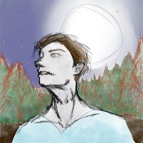
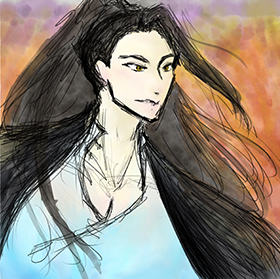

A fake news article on the 2020 US election.A Valentine's Day poster.A 'recreation' of a movie poster.
Yearbook
A plain variation of a yearbook cover sample.A more school-mascot-themed sample of an inner autograph page.A more Disney-themed sample of an inner autograph page.
Miscellaneous

Zombie (rough) - January 2021A sample logo made for the 7332 Puddle Jumper Robotics team.

General (rough) - December 2020